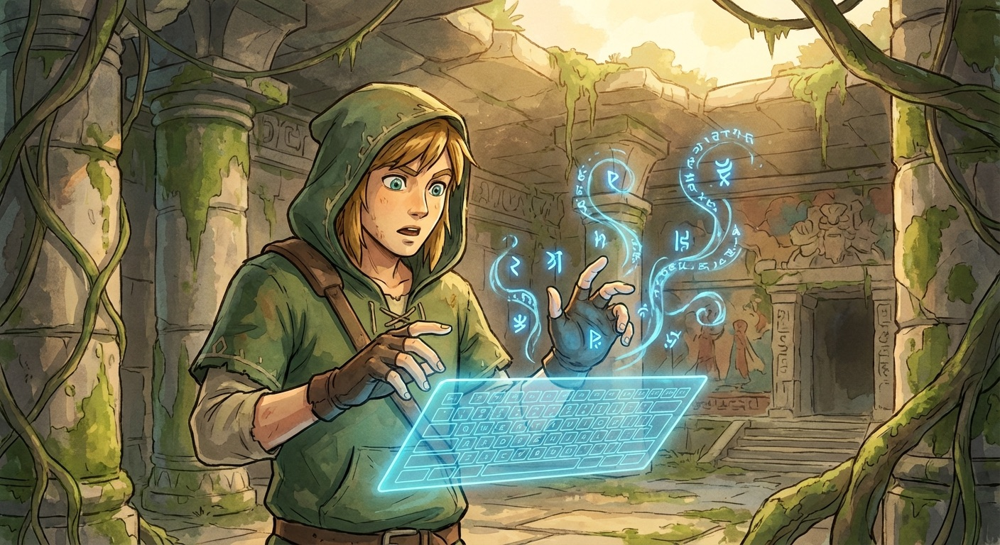
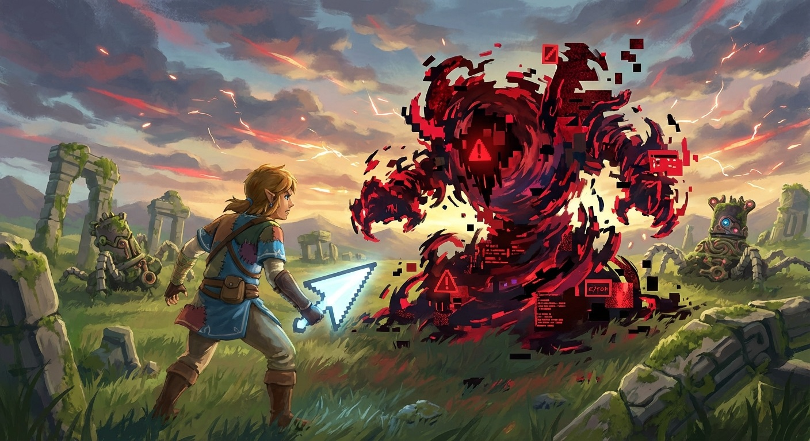
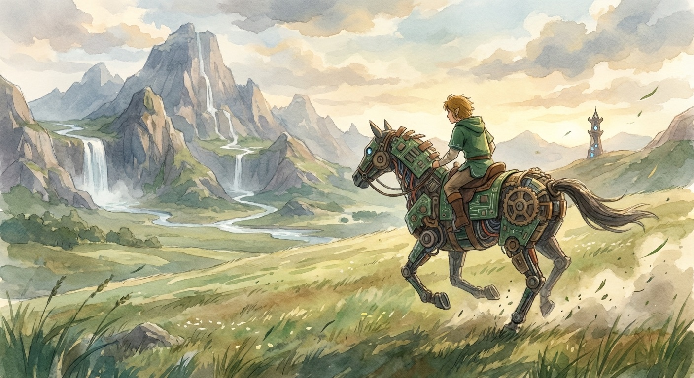
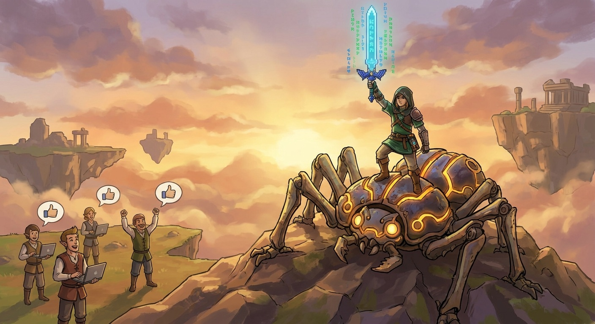
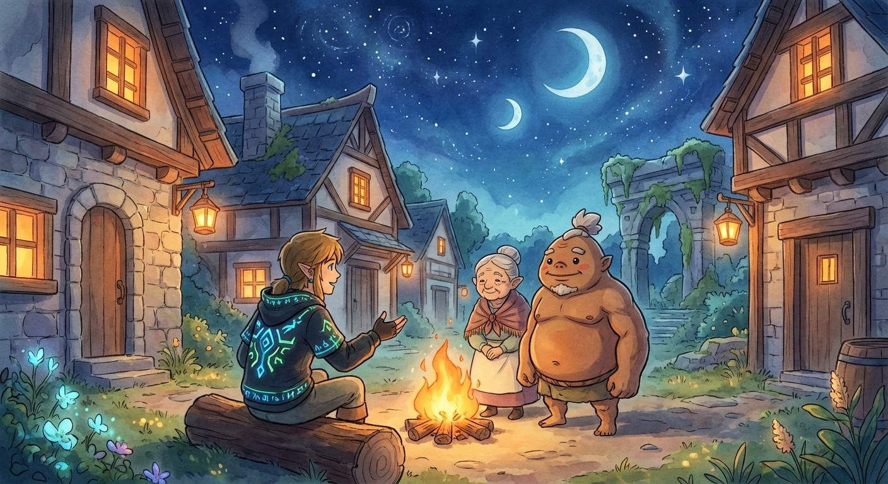

塞尔达画风
程序员
逆袭
热血冒险
🌙 穿越
凌晨三点，程序员林远已经连续加班72小时。
屏幕上是一个怎么都修不好的bug——系统每到第1024次循环就会崩溃，错误日志像天书。他揉了揉酸涩的眼睛，在键盘上敲下最后一行代码：
while(true) { debug(world); }
回车的瞬间，屏幕炸出一道白光。等他睁开眼——脚下是悬崖，面前是一片从未见过的壮丽大陆。
屏幕上是一个怎么都修不好的bug——系统每到第1024次循环就会崩溃，错误日志像天书。他揉了揉酸涩的眼睛，在键盘上敲下最后一行代码：
while(true) { debug(world); }
回车的瞬间，屏幕炸出一道白光。等他睁开眼——脚下是悬崖，面前是一片从未见过的壮丽大陆。

✨ 觉醒
这个世界的"魔法"是靠符文驱动的——空气中漂浮着半透明的符号，和代码语法惊人地相似。
林远试探地在空中划出一行：if(fire) { extinguish(); }
面前燃烧的灌木丛"噗"的一声灭了。
旁边的村民们目瞪口呆："他……他竟然徒手编写了高阶灭火符文！这是传说中的符文大师啊！"
林远：（这不就是条件判断吗……）
林远试探地在空中划出一行：if(fire) { extinguish(); }
面前燃烧的灌木丛"噗"的一声灭了。
旁边的村民们目瞪口呆："他……他竟然徒手编写了高阶灭火符文！这是传说中的符文大师啊！"
林远：（这不就是条件判断吗……）
· · ·
🗡️ 升级
消息传开了。传说中的符文大师现世，各方势力蠢蠢欲动。
林远开始接任务升级。他发现——这个世界的怪物本质上都是程序bug。内存溢出变成的沼泽怪、死循环生成的永动骷髅、空指针引发的虚无裂缝……
别人用剑砍、用魔法炸，效率极低。而林远直接读取怪物的底层代码，找到bug，一行修复。
林远开始接任务升级。他发现——这个世界的怪物本质上都是程序bug。内存溢出变成的沼泽怪、死循环生成的永动骷髅、空指针引发的虚无裂缝……
别人用剑砍、用魔法炸，效率极低。而林远直接读取怪物的底层代码，找到bug，一行修复。

面对一只由上千行错误代码凝聚成的巨型Bug怪，其他勇者纷纷倒下。林远深吸一口气，打开"调试视野"——
怪物的核心是一个递归没有终止条件。
他在空中写下一行符文：if(depth > MAX) return;
巨怪发出刺耳的尖叫，从内部开始瓦解，化作无数光点消散。
怪物的核心是一个递归没有终止条件。
他在空中写下一行符文：if(depth > MAX) return;
巨怪发出刺耳的尖叫，从内部开始瓦解，化作无数光点消散。
· · ·

🏔️ 征程
传闻世界之北有一个终极Bug——一个创世之初就埋下的系统漏洞，正在不断扩大，吞噬一切。
林远骑上由废弃机械改造的坐骑，踏上了前往世界尽头的旅程。一路上收获了伙伴——一个只会写注释的话痨法师、一个把所有变量都命名为a的野蛮战士。
"你们的代码风格太烂了……"林远无奈吐槽。
"能跑就行！"战士理直气壮。
林远骑上由废弃机械改造的坐骑，踏上了前往世界尽头的旅程。一路上收获了伙伴——一个只会写注释的话痨法师、一个把所有变量都命名为a的野蛮战士。
"你们的代码风格太烂了……"林远无奈吐槽。
"能跑就行！"战士理直气壮。
⚡ 决战
世界尽头，终极Bug现出真身——一个不断膨胀的混沌黑洞，由无数未处理的异常堆叠而成。它每秒都在吞噬大地。
林远翻遍了所有已知的debug技巧，全部无效。这个bug太底层了，像是刻在世界的底层架构里。
"那就——重构。"
他闭上眼，把72小时通宵debug练出的所有本事倾注到指尖，写下了此生最完美的一段代码——
林远翻遍了所有已知的debug技巧，全部无效。这个bug太底层了，像是刻在世界的底层架构里。
"那就——重构。"
他闭上眼，把72小时通宵debug练出的所有本事倾注到指尖，写下了此生最完美的一段代码——

光芒从代码中迸发，混沌黑洞从中心开始收缩、净化、重建。天空裂开的缝隙愈合，大地重新长出绿色。
村民们欢呼着涌来，把林远抛向天空。
他看着这片被自己debug拯救的世界，忍不住笑了："原来996不是没意义的……至少debug技术练到满级了。"
村民们欢呼着涌来，把林远抛向天空。
他看着这片被自己debug拯救的世界，忍不住笑了："原来996不是没意义的……至少debug技术练到满级了。"

🔥 尾声
篝火旁，同伴们围坐一圈。有人问："大师，你还会回去吗？"
林远望着满天繁星，想起了那个凌晨三点的格子间。
"回去也行。但下次加班的时候——我知道自己在写的每一行代码，都可能改变一个世界。"
星光下，他的帽衫上的符文微微发光。
林远望着满天繁星，想起了那个凌晨三点的格子间。
"回去也行。但下次加班的时候——我知道自己在写的每一行代码，都可能改变一个世界。"
星光下，他的帽衫上的符文微微发光。